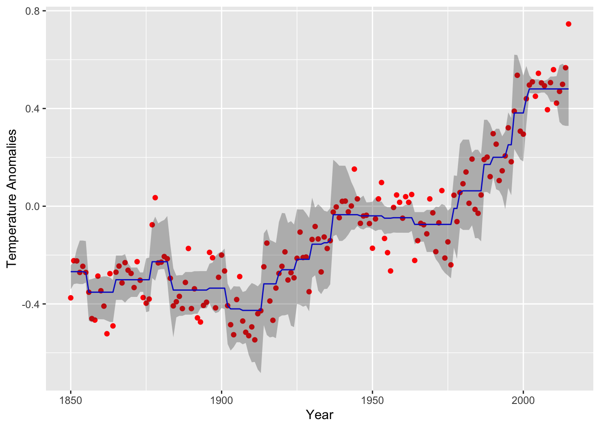
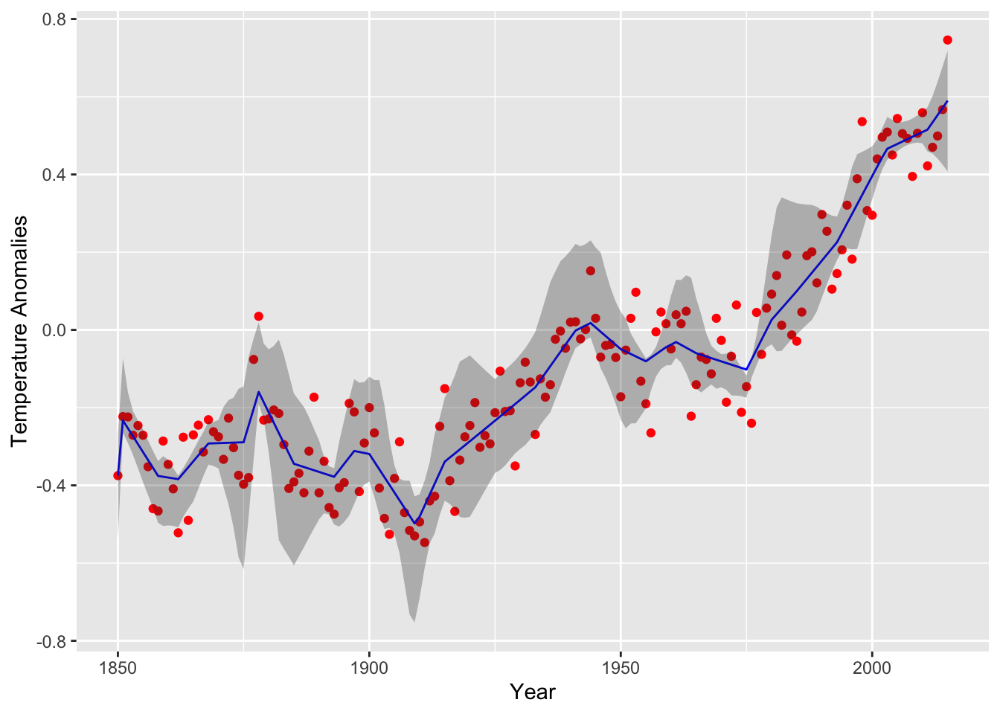

Near Isotonic and Near Convex Regression
Given a set of data points \(y \in {\mathbf R}^m\), Tibshirani, Hoefling, and Tibshirani (2011) fit a nearly-isotonic approximation \(\beta \in {\mathbf R}^m\) by solving
\[ \begin{array}{ll} \underset{\beta}{\mbox{minimize}} & \frac{1}{2}\sum_{i=1}^m (y_i - \beta_i)^2 + \lambda \sum_{i=1}^{m-1}(\beta_i - \beta_{i+1})_+, \end{array} \]
where \(\lambda \geq 0\) is a penalty parameter and \(x_+
=\max(x,0)\). This can be directly formulated in CVXR. As an
example, we use global warming data from
the
Carbon Dioxide Information Analysis Center (CDIAC). The
data points are the annual temperature anomalies relative to the
1961–1990 mean.
data(cdiac)
str(cdiac)## 'data.frame': 166 obs. of 14 variables:
## $ year : int 1850 1851 1852 1853 1854 1855 1856 1857 1858 1859 ...
## $ jan : num -0.702 -0.303 -0.308 -0.177 -0.36 -0.176 -0.119 -0.512 -0.532 -0.307 ...
## $ feb : num -0.284 -0.362 -0.477 -0.33 -0.28 -0.4 -0.373 -0.344 -0.707 -0.192 ...
## $ mar : num -0.732 -0.485 -0.505 -0.318 -0.284 -0.303 -0.513 -0.434 -0.55 -0.334 ...
## $ apr : num -0.57 -0.445 -0.559 -0.352 -0.349 -0.217 -0.371 -0.646 -0.517 -0.203 ...
## $ may : num -0.325 -0.302 -0.209 -0.268 -0.23 -0.336 -0.119 -0.567 -0.651 -0.31 ...
## $ jun : num -0.213 -0.189 -0.038 -0.179 -0.215 -0.16 -0.288 -0.31 -0.58 -0.25 ...
## $ jul : num -0.128 -0.215 -0.016 -0.059 -0.228 -0.268 -0.297 -0.544 -0.324 -0.285 ...
## $ aug : num -0.233 -0.153 -0.195 -0.148 -0.163 -0.159 -0.305 -0.327 -0.28 -0.104 ...
## $ sep : num -0.444 -0.108 -0.125 -0.409 -0.115 -0.339 -0.459 -0.393 -0.339 -0.575 ...
## $ oct : num -0.452 -0.063 -0.216 -0.359 -0.188 -0.211 -0.384 -0.467 -0.2 -0.255 ...
## $ nov : num -0.19 -0.03 -0.187 -0.256 -0.369 -0.212 -0.608 -0.665 -0.644 -0.316 ...
## $ dec : num -0.268 -0.067 0.083 -0.444 -0.232 -0.51 -0.44 -0.356 -0.3 -0.363 ...
## $ annual: num -0.375 -0.223 -0.224 -0.271 -0.246 -0.271 -0.352 -0.46 -0.466 -0.286 ...Since we plan to fit the regression and also get some idea of the standard errors, we write a function that computes the fit for use in bootstrapping. We directly call the solver in this instance, to save computational time in bootstrapping. For more on this, see Getting Faster Results.
neariso_fit <- function(y, lambda) {
m <- length(y)
beta <- Variable(m)
obj <- 0.5 * sum((y - beta)^2) + lambda * sum(pos(diff(beta)))
prob <- Problem(Minimize(obj))
solve(prob)$getValue(beta)
## prob_data <- get_problem_data(prob, solver = "ECOS")
## solver_output <- ECOSolveR::ECOS_csolve(c = prob_data[["c"]],
## G = prob_data[["G"]],
## h = prob_data[["h"]],
## dims = prob_data[["dims"]],
## A = prob_data[["A"]],
## b = prob_data[["b"]])
## unpack_results(prob, "ECOS", solver_output)$getValue(beta)
}The pos atom evaluates \(x_+\) elementwise on the input expression.
The boot library provides all the tools for bootstrapping but
requires a statistic function that takes particular arguments: a data
frame, followed by the bootstrap indices and any other arguments
(\(\lambda\) for instance). This is shown below.
NOTE In what follows, we use a very small number of bootstrap samples as the fits are time consuming.
neariso_fit_stat <- function(data, index, lambda) {
sample <- data[index,] # Bootstrap sample of rows
sample <- sample[order(sample$year),] # Order ascending by year
neariso_fit(sample$annual, lambda)
}set.seed(123)
boot.neariso <- boot(data = cdiac, statistic = neariso_fit_stat, R = 10, lambda = 0.44)
ci.neariso <- t(sapply(seq_len(nrow(cdiac)),
function(i) boot.ci(boot.out = boot.neariso, conf = 0.95,
type = "norm", index = i)$normal[-1]))
data.neariso <- data.frame(year = cdiac$year, annual = cdiac$annual, est = boot.neariso$t0,
lower = ci.neariso[, 1], upper = ci.neariso[, 2])We can now plot the fit and confidence bands for the near isotonic fit.
(plot.neariso <- ggplot(data = data.neariso) +
geom_point(mapping = aes(year, annual), color = "red") +
geom_line(mapping = aes(year, est), color = "blue") +
geom_ribbon(mapping = aes(x = year, ymin = lower,ymax = upper),alpha=0.3) +
labs(x = "Year", y = "Temperature Anomalies")
) The curve follows the data well, but exhibits some choppiness in regions with a steep trend.
For a smoother curve, we can solve for the nearly-convex fit described in the same paper:
\[ \begin{array}{ll} \underset{\beta}{\mbox{minimize}} & \frac{1}{2}\sum_{i=1}^m (y_i - \beta_i)^2 + \lambda \sum_{i=1}^{m-2}(\beta_i - 2\beta_{i+1} + \beta_{i+2})_+ \end{array} \]
This replaces the first difference term with an approximation to the
second derivative at \(\beta_{i+1}\). In CVXR, the only change
necessary is the penalty line: replacing diff(x) by
diff(x, differences = 2).
nearconvex_fit <- function(y, lambda) {
m <- length(y)
beta <- Variable(m)
obj <- 0.5 * sum((y - beta)^2) + lambda * sum(pos(diff(beta, differences = 2)))
prob <- Problem(Minimize(obj))
prob_data <- get_problem_data(prob, solver = "ECOS")
solve(prob)$getValue(beta)
## solver_output <- ECOSolveR::ECOS_csolve(c = prob_data[["c"]],
## G = prob_data[["G"]],
## h = prob_data[["h"]],
## dims = prob_data[["dims"]],
## A = prob_data[["A"]],
## b = prob_data[["b"]])
## unpack_results(prob, "ECOS", solver_output)$getValue(beta)
}
nearconvex_fit_stat <- function(data, index, lambda) {
sample <- data[index,] # Bootstrap sample of rows
sample <- sample[order(sample$year),] # Order ascending by year
nearconvex_fit(sample$annual, lambda)
}
set.seed(987)
boot.nearconvex <- boot(data = cdiac, statistic = nearconvex_fit_stat, R = 5, lambda = 0.44)
ci.nearconvex <- t(sapply(seq_len(nrow(cdiac)),
function(i) boot.ci(boot.out = boot.nearconvex, conf = 0.95,
type = "norm", index = i)$normal[-1]))
data.nearconvex <- data.frame(year = cdiac$year, annual = cdiac$annual, est = boot.nearconvex$t0,
lower = ci.nearconvex[, 1], upper = ci.nearconvex[, 2])The resulting curve for the near convex fit is depicted below with 95% confidence bands generated from \(R = 5\) samples. Note the jagged staircase pattern has been smoothed out.
(plot.nearconvex <- ggplot(data = data.nearconvex) +
geom_point(mapping = aes(year, annual), color = "red") +
geom_line(mapping = aes(year, est), color = "blue") +
geom_ribbon(mapping = aes(x = year, ymin = lower,ymax = upper),alpha=0.3) +
labs(x = "Year", y = "Temperature Anomalies")
)
Notes
We can easily extend this example to higher-order differences or
lags. To make this easy, the function diff takes an argument
differences that is 1 by default; a third-order difference is specified
as diff(x, differences = 3).
Session Info
sessionInfo()## R version 4.4.0 (2024-04-24)
## Platform: x86_64-apple-darwin23.4.0
## Running under: macOS Sonoma 14.5
##
## Matrix products: default
## BLAS: /usr/local/Cellar/openblas/0.3.27/lib/libopenblasp-r0.3.27.dylib
## LAPACK: /usr/local/Cellar/r/4.4.0_1/lib/R/lib/libRlapack.dylib; LAPACK version 3.12.0
##
## locale:
## [1] en_US.UTF-8/en_US.UTF-8/en_US.UTF-8/C/en_US.UTF-8/en_US.UTF-8
##
## time zone: America/Los_Angeles
## tzcode source: internal
##
## attached base packages:
## [1] stats graphics grDevices datasets utils methods base
##
## other attached packages:
## [1] boot_1.3-30 ggplot2_3.5.1 CVXR_1.0-13
##
## loaded via a namespace (and not attached):
## [1] gmp_0.7-4 sass_0.4.9 utf8_1.2.4 generics_0.1.3
## [5] slam_0.1-50 blogdown_1.19 lattice_0.22-6 digest_0.6.35
## [9] magrittr_2.0.3 evaluate_0.23 grid_4.4.0 bookdown_0.39
## [13] fastmap_1.2.0 jsonlite_1.8.8 Matrix_1.7-0 Rmosek_10.2.0
## [17] fansi_1.0.6 scales_1.3.0 codetools_0.2-20 jquerylib_0.1.4
## [21] cli_3.6.2 Rmpfr_0.9-5 rlang_1.1.3 Rglpk_0.6-5.1
## [25] bit64_4.0.5 munsell_0.5.1 withr_3.0.0 cachem_1.1.0
## [29] yaml_2.3.8 tools_4.4.0 osqp_0.6.3.2 Rcplex_0.3-6
## [33] rcbc_0.1.0.9001 dplyr_1.1.4 colorspace_2.1-0 gurobi_11.0-0
## [37] assertthat_0.2.1 vctrs_0.6.5 R6_2.5.1 lifecycle_1.0.4
## [41] bit_4.0.5 pkgconfig_2.0.3 cccp_0.3-1 pillar_1.9.0
## [45] bslib_0.7.0 gtable_0.3.5 glue_1.7.0 Rcpp_1.0.12
## [49] highr_0.11 xfun_0.44 tibble_3.2.1 tidyselect_1.2.1
## [53] knitr_1.47 farver_2.1.2 htmltools_0.5.8.1 labeling_0.4.3
## [57] rmarkdown_2.27 compiler_4.4.0